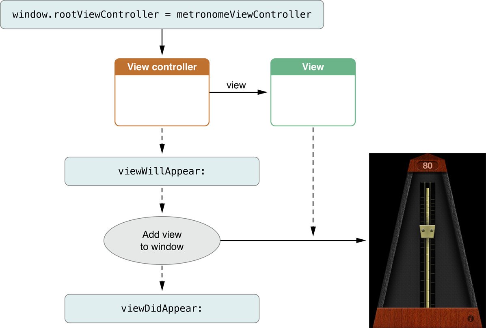
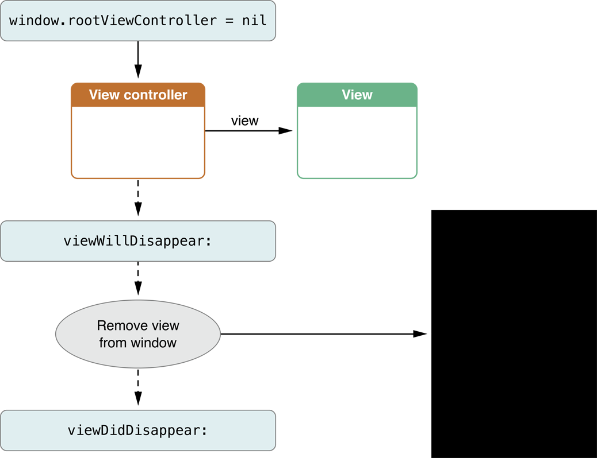

iOS 视图控制器编程指南：响应与显示相关的通知
记录关于学习过的 iOS 文档
响应显示相关的通知
当视图控制器视图的可见性更改时，视图控制器会调用一些内置的方法通知发生更改的子类。你可以重写这些方法重写子类如何应对这些更改。例如，你可以使用这些通知更改状态栏的颜色和方向使它适应将要显示的视图的主题风格。
响应视图出现
图 5-1 展示当视图控制器的视图添加到窗口的视图层次结构后发生的事件顺序。viewWillAppear: 和 viewDidAppear: 方法给子类机会执行与视图外观相关的额外动作。
图 5-1 响应视图的外观

响应视图消失
图 5-2 展示视图从它的窗口移除时发生的事件顺序。当视图控制器检测到它的视图被隐藏或被删除后，它会调用 viewWillDisappear: 和 viewDidDisappear: 方法给子类机会执行相应任务。
图 5-2 响应视图消失时

判断视图的外观为什么更改
有时，知道视图为什么显示和消失是很有用的。例如，你可能想知道视图的出现是否因为它添加到了容器或者它的出现是否因为其它覆盖它的内容被移除了。这种特殊的例子通常在使用导航控制器时出现；你的内容控制器的视图可能因为视图控制器把它放入导航堆栈中而显示或者因为在之前在它上方的控制器从堆栈中弹出而显示。
UIViewController 类提供一些方法你的视图控制器可以调用判断为什么外观发生更改。表 5-1 描述了这些方法和它们的用途。这些方法可以在你实现的 viewWillAppear:,viewDidAppear:,viewWillDisappear: 和 viewDidDisappear: 方法内部被调用。
表 5-1 调用方法判断视图的外观为什么更改
方法名称 | 用途
——————- | ——————-
isMovingFromParentViewController | 在 viewWillDisappear: 和 viewDidDisappear: 方法内部调用这个方法判断视图控制器的视图的隐藏是否因为视图控制器从它的容器视图控制器移除。
isMovingToParentViewController | 在 viewWillAppear: 和 viewDidAppear: 方法内部调用这个方法判断视图控制的视图的显示是否因为视图控制器添加到了容器视图控制器。
isBeingPresented | 在 viewWillAppear: 和 viewDidAppear: 方法内部调用这个方法判断视图控制器的视图的显示是否因为视图控制器通过其它视图控制器呈现。
isBeingDismissed | 在 viewWillDisappear: 和 viewDidDisappear: 方法内部调用这个方法判断视图控制器的视图的隐藏是否因为视图控制器被清退 (dismissed，与上面被其它视图控制器显示对应，如信息录入完成，返回之前的视图控制器)。
iOS 翻译 《View Controller Programming Guide for iOS：Introduction》
iOS 翻译 《View Controller Programming Guide for iOS：View Controller Basics》
iOS 翻译 《View Controller Programming Guide for iOS：Using View Controllers in Your App》
iOS 翻译 《View Controller Programming Guide for iOS：Creating Custom Content View Controllers》
iOS 翻译 《View Controller Programming Guide for iOS：Resource Management in View Controllers》
iOS 翻译 《View Controller Programming Guide for iOS：Responding to Display-Related Notifications》
iOS 翻译 《View Controller Programming Guide for iOS：Resizing the View Controller’s Views》
iOS 翻译 《View Controller Programming Guide for iOS：Using View Controllers in the Responder Chain》
iOS 翻译 《View Controller Programming Guide for iOS：Supporting Multiple Interface Orientations》
iOS 翻译 《View Controller Programming Guide for iOS：Coordinating Efforts Between View Controllers》
iOS 翻译 《View Controller Programming Guide for iOS：Enabling Edit Mode in a View Controller》
iOS 翻译 《View Controller Programming Guide for iOS：Creating Custom Segues》
iOS 翻译 《View Controller Programming Guide for iOS：Creating Custom Container View Controllers》